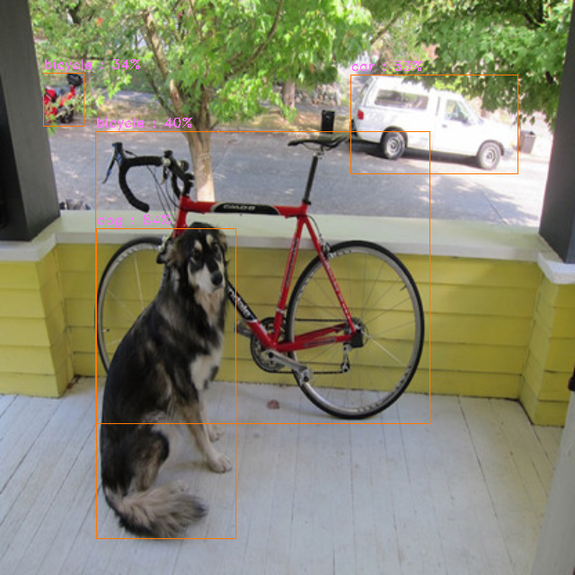

Icraft XRT: yolov5s#
这个用例共提供四个demo，以yolov5s为用例，循序渐进从跑通一个简单的网络到通过流水线并行加速
一 工程配置#
1.1 demo结构#
在上面的工程结构中：
yolov5s是简单通过xrt跑通yolov5s的demoyolov5s_opt在之前的demo中加上了xrt相关接口对时间以及内存的优化yolov5s_imk在之前的demo上加上了自定义硬算子image_make以及Detpostyolov5s_multi_thread在之前的demo基础上加上了流水并行，从而实现进一步的性能优化
1.2 编译生成#
以上工程文件属于 Icraft-Demo 工程的一部分，具体的编译生成方法请参考 Icraft-Demo 的编译生成的说明。
二 适配流程#
2.1 网络编译#
通过Icraft编译器解析两个yolov5s网络
yolov5s 不带任何硬算子的yolov5s检测网络
yolov5s_customop 带image_make, Detpost硬算子，psin的yolov5s检测网络
均可以通过 .\samples\xrt\models 文件夹下的网络文件解析得到
具体编译器安装以及使用方法 参照Icraft编译器使用手册
2.2 环境配置#
2.2.1 x64-windows环境#
安装对应的
CustomOp_Setup_v3.0.0.exe
Icraft_Setup_v3.0.0.exe
由于需要后处理，所以需要编译x64的OpenCV并修改配置CMakeList(./samples/xrt/yolov5s/CMakeLists.txt)，将编译需要的库指向本地安装位置
if (WIN32)
set(OPENCV_PACKAGE_PATH C:/Users/zhangfengyu/Downloads/opencv)
set(CMAKE_PREFIX_PATH ${OPENCV_PACKAGE_PATH}/build)
find_package(OpenCV REQUIRED)
elseif(UNIX)
set(OPENCV_PACKAGE_PATH /mnt/c/Users/zhangfengyu/Downloads/opencv-4.8.0)
set(CMAKE_PREFIX_PATH ${OPENCV_PACKAGE_PATH}/build)
find_package(OpenCV REQUIRED)
endif()
如果不需要后处理也可以自行注释代码后编译
2.2.2 linux-aarch64环境#
安装对应的
CustomOp_3.0.0_arm64.deb
Icraft_3.0.0_arm64.deb
并配置环境变量
source /etc/profile
由于需要后处理，所以需要编译aarch64的OpenCV并修改配置CMakeList(./samples/xrt/yolov5s/CMakeLists.txt)，将编译需要的库指向本地安装位置
if (WIN32)
set(OPENCV_PACKAGE_PATH C:/Users/zhangfengyu/Downloads/opencv)
set(CMAKE_PREFIX_PATH ${OPENCV_PACKAGE_PATH}/build)
find_package(OpenCV REQUIRED)
elseif(UNIX)
set(OPENCV_PACKAGE_PATH /mnt/c/Users/zhangfengyu/Downloads/opencv-4.8.0)
set(CMAKE_PREFIX_PATH ${OPENCV_PACKAGE_PATH}/build)
find_package(OpenCV REQUIRED)
endif()
如果不需要后处理也可以自行注释代码后编译
2.2.3 python环境#
只支持 python3.8
如果需要torch的库请卸载本地的torch并使用以下指令安装指定版本
conda install pytorch==2.0.1 torchvision==0.15.2 torchaudio==2.0.2 pytorch-cuda=11.7 -c pytorch -c nvidia
安装对应的
icraft-3.0.0-cp38-none-win_amd64.whl
三 Demo解析#
3.1 yolov5s Demo#
yolov5s Demo 意在快速部署yolov5s网络并上板跑通
.cpp文件 samples/xrt/yolov5s/yolov5s.cpp
.py文件 samples/xrt/yolov5s/yolov5s.py
#pragma once
#include <icraft-xrt/core/session.h>
#include <icraft-xrt/dev/host_device.h>
#include <icraft-xrt/dev/buyi_device.h>
#include <icraft-backends/buyibackend/buyibackend.h>
#include <icraft-backends/hostbackend/backend.h>
#include <icraft-backends/hostbackend/utils.h>
#include <fstream>
#include <opencv2/opencv.hpp>
#include "post.h"
using namespace icraft::xrt;
using namespace icraft::xir;
namespace fs = std::filesystem;
int main(int argc, char* argv[]) {
//我们使用不同的url字符串去区分不同的Device设备
auto dev_url = "axi://ql100aiu?npu=0x40000000&dma=0x80000000";
auto dev_url_socket = "socket://ql100aiu@192.168.125.148:9981?npu=0x40000000&dma=0x80000000";
Device device;
#ifdef _WIN32
//Demo默认在windows环境中打开socket Device
device = Device::Open(dev_url_socket);
#else
//Demo默认在windows环境中打开axi Device
device = Device::Open(dev_url);
#endif
//配置网络名以及输入图片
std::string network_name = "yolov5s";
std::string image_file = "dog.png";
//根据网络名以及输入图片在不同的环境下寻找对应的文件
#ifdef _WIN32
auto json_file = "E:/test/json&raw/30/" + network_name + "_BY.json";
auto raw_file = "E:/test/json&raw/30/" + network_name + "_BY.raw";
auto img_file = "E:/test/images/" + image_file;
#else
auto json_file = "./json&raw/" + network_name + "_BY.json";
auto raw_file = "./json&raw/" + network_name + "_BY.raw";
auto img_file = "./images/" + image_file;
#endif
//根据序列化的网络json文件反序列化成icraft::xir::network对象
auto network = Network::CreateFromJsonFile(json_file);
//std::cout << "CreaFom finish" << std::endl;
//network加载raw_file
network.lazyLoadParamsFromFile(raw_file);
//std::cout << "lazyload finish" << std::endl;
//创建session，将buyibackend以及hostbackend绑定到sess对象上
auto sess = icraft::xrt::Session::Create<BuyiBackend, HostBackend>(network, { device, HostDevice::Default() });
//std::cout << "Creat session finish" << std::endl;
//session执行前必须进行apply部署操作
sess.apply();
//std::cout << "apply finish" << std::endl;
//借助HostBackend的工具函数将输入图片转成Tensor
auto input_tensor = icraft::hostbackend::utils::Image2Tensor(img_file);
//std::cout << "Crea tensor finish" << std::endl;
//前向
auto outputs = sess.forward({ input_tensor });
//std::cout << "forward finish" << std::endl;
//将进行后处理并输出
post(outputs, img_file);
//关闭设备
Device::Close(device);
}
from yolov5s_post import *
from icraft.xir import *
from icraft.xrt import *
from icraft.buyibackend import *
from icraft.host_backend import *
import os
import sys
os_name = sys.platform
if os_name.startswith('win'):
device_url = "socket://ql100aiu@192.168.125.148:9981"
json_file = "E:/test/json&raw/30/yolov5s_BY.json"
raw_file = "E:/test/json&raw/30/yolov5s_BY.raw"
img_file = "E:/test/images/dog.png";
elif os_name.startswith('linux'):
device_url = "axi://ql100aiu"
json_file = "./test/json&raw/yolov5s_BY.json"
raw_file = "./test/json&raw/yolov5s_BY.raw"
img_file = "./images/dog.png"
device = Device.Open(device_url)
network = Network.CreateFromJsonFile(json_file)
network.lazyLoadParamsFromFile(raw_file)
sess = Session.Create([ BuyiBackend, HostBackend ], network.view(0), [device, HostDevice.Default()])
sess.apply()
# 调用HostBackend的辅助函数将图片转为Tensor
input_tensor = Image2Tensor(img_file, -1, -1)
# 前向，获取输出
output_tensors = sess.forward([ input_tensor ])
yolov5_post(output_tensors, img_file)
Device.Close(device)
后处理的部分可以参考对应代码，这里就不再赘述，使用docs/source/static/dog.png 图片作为输入，最后输出的正确结果应该如下

3.2 yolov5s_opt Demo#
yolov5s_opt Demo 在yolov5s Demo的基础上调用了compressFtmp以及speedMode接口
compressFtmp: 可以将网络中间输出层的使用的地址空间进行复用，从而实现减少对plddr的需求
speedMode： 可以自动将多个连续的hardop进行合并，减少频繁同步带来的软件时间
.cpp文件 samples/xrt/yolov5s/yolov5s_opt.cpp
.pyw文件 samples/xrt/yolov5s/yolov5s_opt.py
相较于yolov5s Demo， yolov5s_opt Demo 增加了如何调用BuyiBackend提供的相关优化接口
备注
在BuyiBackend调用compressFtmp和speedMode的优化效果与在编译阶段开启合并算子和内存优化是一样的， 如果选择在BuyiBackend调用这两个接口，需要注意关闭mmu模式，并且不能使用合并后或者内存优化后的网络。 建议非特殊情况都使用mmu模式，在编译阶段开启合并算子和内存优化
//获取session第一个绑定的backend并将其cast成BuyiBackend
auto buyibackend = sess->backends[0].cast<BuyiBackend>();
//开启中间层压缩功能，将网络中间输出数据进行地址复用，减少对硬件内存的消耗
buyibackend.compressFtmp();
//开启加速功能，此功能会根据网络结构将能够合并的硬算子进行合并，从而减少频繁同步以及切入切出带来的软件消耗
buyibackend.speedMode();
//session执行前必须进行apply部署操作
sess.apply();
调用接口时需要在session构造之后，得到绑定的backend并cast成BuyiBackend对象，之后调用接口，之后对session进行部署
对应的python代码如下
sess = Session.Create([ BuyiBackend, HostBackend ], network.view(0), [device, HostDevice.Default()])
buyibackend = BuyiBackend(sess.backends[0])
buyibackend.compressFtmp()
buyibackend.speedMode()
sess.apply()
3.3 yolov5s_imk Demo#
yolov5s_imk Demo 相较于3.2 yolov5s_opt, 反序列化的json&raw文件有所不同，yolov5s_customop网络中会添加image_make以及Detpost硬算子用于调用7100芯片的FPGA运算单元进行加速
对于psin image_make的使用，用户需要在执行该算子的前向之前配置相关的寄存器并启动运算单元，所以我们需要将网络分成两段来执行，中间插入配置image_make的代码
network.view 接口就提供了网络分段的功能，具体如何操作可以看核心代码
.cpp文件 samples/xrt/yolov5s/yolov5s_imk.cpp
.pyw文件 samples/xrt/yolov5s/yolov5s_imk.py
//通过view将网络切分成两段，前一段到做imk前，剩下的是后一段
//view接口传入两个op_index 是左开右闭，imk算子在网络中的idx是3，所以view(0,3)表示做imk前
//view传入一个op_index 表示从该op_index的算子开始切分，一直到最后
auto network_host = network.view(0, 3);
auto network_imk = network.view(3);
//创建session，将buyibackend以及hostbackend绑定到sess对象上
//根据view出来的两个network_view 分别构造session对象
auto sess_host = icraft::xrt::Session::Create<HostBackend>(network_host, {HostDevice::Default() });
auto sess_imk = icraft::xrt::Session::Create<BuyiBackend, HostBackend>(network_imk, { device, HostDevice::Default() });
//和yolov5s_opt demo一样，我们可以对session对象进行优化
auto buyi_backend_imk = sess_imk->backends[0].cast<BuyiBackend>();
buyi_backend_imk.compressFtmp();
buyi_backend_imk.speedMode();
//session执行前必须进行apply部署操作
//两个session都要部署
sess_host.apply();
sess_imk.apply();
//借助HostBackend的工具函数将输入图片转成Tensor
auto input_dtype = network.inputs()[0].tensorType();
auto input_tensor = icraft::hostbackend::utils::Image2Tensor(img_file, input_dtype);
//第一段前向执行
auto outputs_host = sess_host.forward({ input_tensor });
//在进行第二段session的前向前，需要进行imk硬算子的一系列配置
//具体配置参数可以参见imk手册
auto ImageMakeChannel = outputs_host[0].dtype()->shape[-1];
auto ImageMakeWidth = outputs_host[0].dtype()->shape[-2];
auto ImageMakeHeight = outputs_host[0].dtype()->shape[-3];
//获取umda的memRegion
auto uregion_ = device.getMemRegion("udma");
//将host上的输出复制到udma上，并返回对应的tensor
auto utensor = outputs_host[0].to(uregion_);
//获取在udma上对应的物理指针
auto ImageMakeRddrBase = utensor.data().addr();
auto ImageMakeRlen = ((ImageMakeWidth * ImageMakeHeight - 1) / (24 / ImageMakeChannel) + 1) * 3;
auto ImageMakeLastSft = ImageMakeWidth * ImageMakeHeight - (ImageMakeRlen - 3) / 3 * (24 / ImageMakeChannel);
device.defaultRegRegion().write(0x1000C0000 + 0x4, ImageMakeRddrBase, true);
device.defaultRegRegion().write(0x1000C0000 + 0x8, ImageMakeRlen, true);
device.defaultRegRegion().write(0x1000C0000 + 0xC, ImageMakeLastSft, true);
device.defaultRegRegion().write(0x1000C0000 + 0x10, ImageMakeChannel, true);
device.defaultRegRegion().write(0x1000C0000 + 0x1C, 1, true);
device.defaultRegRegion().write(0x1000C0000 + 0x20, 0, true);
device.defaultRegRegion().write(0x1000C0000, 1, true);
auto outputs_imk = sess_imk.forward({ input_tensor });
//将进行后处理并输出
post_detpost(outputs_imk, img_file);
对应的python代码如下
network_host = network.view(0,3)
network_imk = network.view(3)
sess_host = Session.Create([HostBackend], network_host, [HostDevice.Default()])
sess_imk = Session.Create([ BuyiBackend, HostBackend ], network_imk, [device, HostDevice.Default()])
buyibackend_imk = BuyiBackend(sess_imk.backends[0])
buyibackend_imk.compressFtmp()
buyibackend_imk.speedMode()
sess_host.apply()
sess_imk.apply()
input_dtype = network.inputs()[0]
# 调用HostBackend的辅助函数将图片转为Tensor
input_tensor = Image2Tensor(img_file, input_dtype)
# 前向，获取输出
outputs_host = sess_host.forward([input_tensor]);
ImageMakeChannel = outputs_host[0].dtype().shape[-1]
ImageMakeWidth = outputs_host[0].dtype().shape[-2]
ImageMakeHeight = outputs_host[0].dtype().shape[-3]
uregion_ = device.getMemRegion("udma")
#将host上的输出复制到udma上，并返回对应的tensor
utensor = outputs_host[0].to(uregion_)
#获取在udma上对应的物理指针
ImageMakeRddrBase = utensor.data().addr()
ImageMakeRlen = ((ImageMakeWidth * ImageMakeHeight - 1) // (24 // ImageMakeChannel) + 1) * 3
ImageMakeLastSft = ImageMakeWidth * ImageMakeHeight - (ImageMakeRlen - 3) // 3 * (24 // ImageMakeChannel)
device.defaultRegRegion().write(0x1000C0000 + 0x4, ImageMakeRddrBase, True)
device.defaultRegRegion().write(0x1000C0000 + 0x8, ImageMakeRlen, True)
device.defaultRegRegion().write(0x1000C0000 + 0xC, ImageMakeLastSft, True)
device.defaultRegRegion().write(0x1000C0000 + 0x10, ImageMakeChannel, True)
device.defaultRegRegion().write(0x1000C0000 + 0x1C, 1, True)
device.defaultRegRegion().write(0x1000C0000 + 0x20, 0, True)
device.defaultRegRegion().write(0x1000C0000, 1, True)
outputs_imk = sess_imk.forward([ input_tensor ]);
post_detpost(outputs_imk, img_file, json_file)
3.4 yolov5s_multi_thread Demo#
为了追求更高的性能，我们可以通过将上述所用到的接口进行组合，利用7100多处理器异构的特点，通过多线程流水线的方式来实现异构并行
该例子中，通过将一个网络按执行单元分为image_make(FPGA)，icore(icore),后处理(cpu)，利用线程库实现了三级流水并行
由于例子相对复杂，具体操作和用法可以直接参见代码
.cpp文件 samples/xrt/yolov5s/yolov5s_multi_thread.cpp